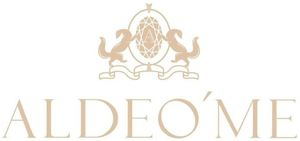

Trade Mark Journal No.2025/013 28 March 2025
WO0000001844611 (14)
Office of origin: Russian Federation
Date of International Registration:24 January 2025
Date of designation in the UK:
24 January 2025

The mark contains the colour beige.
- Class 14
- Agates; diamonds; amulets [jewellery]; bracelets [jewellery]; watch bands; key rings; charms [jewellery]; brooches [jewellery]; pins [jewellery]; ornamental pins; tie pins; beads for making jewellery; pearls made of ambroid [pressed amber]; busts of precious metal; jet, unwrought or semi-wrought; key rings [split rings with trinket or decorative fob]; pearls [jewellery]; copper tokens; tie clips; cuff links; clasps for jewellery; badges of precious metal; gold, unworked or semi-worked; works of art of precious metal; jewellery; ivory jewellery; jewellery of yellow amber; cabochons; precious stones; semi-precious stones; spun silver [silver wire]; necklaces [jewellery]; rings [jewellery]; boxes of precious metal; presentation boxes for jewellery; commemorative statuary cups of precious metal; prize cups of precious metal; medals; lockets [jewellery]; precious metals, unwrought or semi-wrought; coins; gold thread [jewellery]; threads of precious metal [jewellery]; silver thread [jewellery]; olivine [gems]; platinum [metal]; crucifixes of precious metal, other than jewellery; crucifixes as jewellery; jewellery rolls; silver, unwrought or beaten; earrings; ingots of precious metals; alloys of precious metal; statues of precious metal; statuettes made of or coated with precious or semi-precious metals or precious stones; paste jewellery; jewellery for pets; shoe jewellery; hat jewellery; figurines of precious metal; presentation boxes for watches; chronographs [watches]; chronometers; chains [jewellery]; watch chains; watches; clocks; wristwatches; jewellery boxes; spinel [precious stones].
KHODZHER VALENTIN DMITRIEVICH
Representative: Shestakova Tat'iana Aleksandrovna, a/ia 163, g. Irkutsk, RU-664074 Irkutskaia obl., RUSSIAN FEDERATION